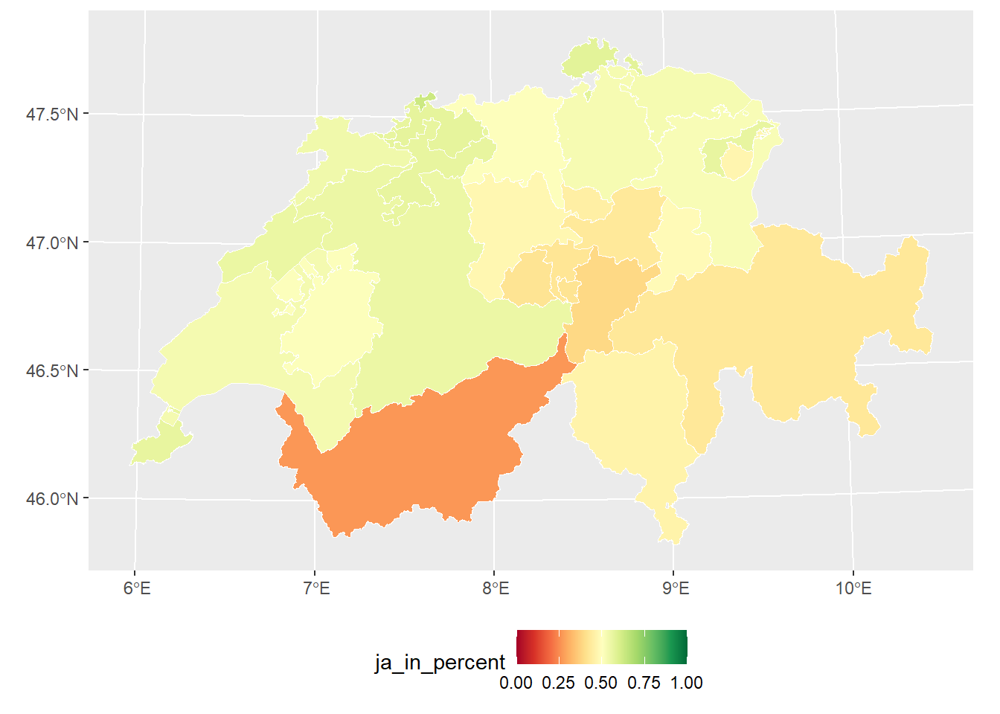
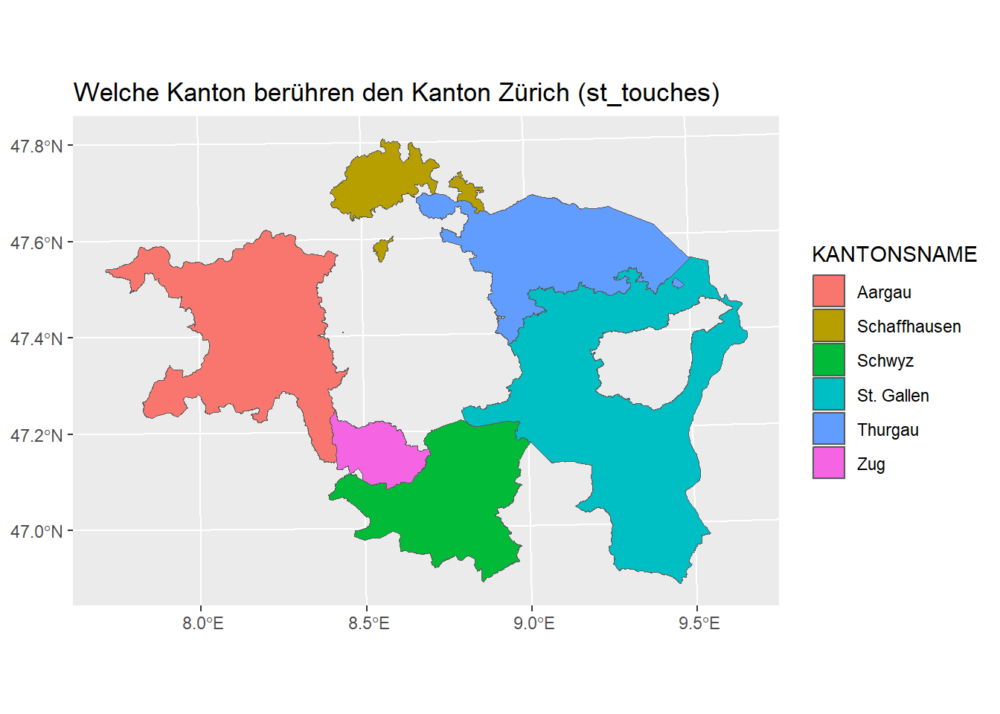
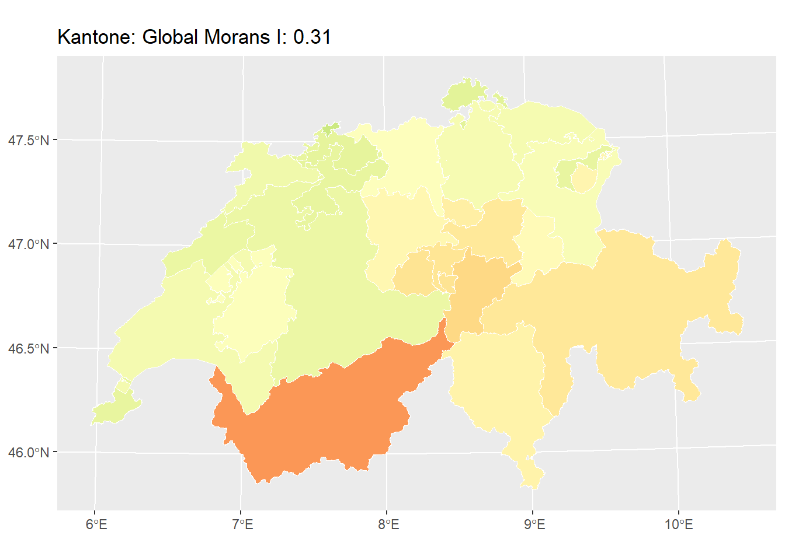
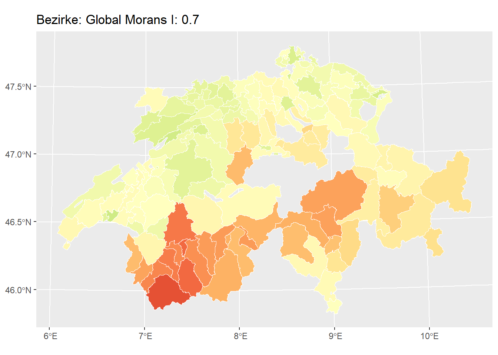

library("dplyr")
library("ggplot2")
library("sf")
zweitwohnung_kanton <- read_sf("datasets/rauman/zweitwohnungsinitiative.gpkg", "kanton")Rauman 3: Übung
Heute berechnen wir Morans \(I\), also ein globales Mass für Autokorrelation, für die Abstimmungsresultate der Zweitwohnungsinitiative. Dieser Wert beschreibt, ob Kantone, die nahe beieinander liegen, ähnliche Abstimmungswerte haben. Hierfür verwenden wir den Datensatz zweitwohnungsinitiative.gpkg.
Das Geopackage beinhaltet 3 Layers (siehe st_layers(zweitwohnung_kanton)). In jedem Layer sind die Abstimmungsresultate auf eine andere politische Ebene aggregiert. Wir started mit der Aggregationsstufe “kanton”.
p <- ggplot(zweitwohnung_kanton) +
geom_sf(aes(fill = ja_in_percent), colour = "white",lwd = 0.2) +
scale_fill_gradientn(colours = RColorBrewer::brewer.pal(11, "RdYlGn"), limits = c(0,1)) +
theme(legend.position = "bottom")
p
Für die Berechnung von Morans \(I\) benutzen wir kein externes Package, sondern erarbeiten uns alles selber, basierend auf der Formel von Moran’s \(I\):
\[I = \frac{n}{\sum_{i=1}^n (y_i - \bar{y})^2} \times \frac{\sum_{i=1}^n \sum_{j=1}^n w_{ij}(y_i - \bar{y})(y_j - \bar{y})}{\sum_{i=1}^n \sum_{j=1}^n w_{ij}}\]
wobei:
- \(n\) der Anzahl räumlichen Objekte (hier: Kantone) in unserem Datensatz entspricht
- \(y\) der untersuchten Variabel entspricht (hier: Ja-Anteil in %)
- \(\bar{y}\) dem Mittelwert der untersuchten Variabel entspricht
- \(w_{ij}\) der Gewichtsmatrix entspricht
Um die Sache zu vereinfachen, verwenden wir folgende variablen in R:
\[I =\frac{\text{zaehler1}}{\text{nenner1}}\times\frac{\text{zaehler2}}{\text{nenner2}}\]
wobei:
\[\begin{align} \text{zaehler1} &= n \\ \text{nenner1} &= \sum_{i=1}^n (y_i - \bar{y})^2 \\ \text{zaehler2} &= \sum_{i=1}^n \sum_{j=1}^n w_{ij}(y_i - \bar{y})(y_j - \bar{y}) \\ \text{nenner2} &= \sum_{i=1}^n \sum_{j=1}^n w_{ij} \end{align}\]
Diese sieht sehr beeindruckend aus, aber wenn wir die Formel in ihre Einzelbestandteile aufteilen, sehen wir, dass diese in sich gar nicht so komplex sind. Dieses Vorgehen illustriert sehr schön ein generelles Data Science Prinzip. Divide and Conquer - Teile und Herrsche: Teile ein komplexes Problem in kleinere, beherrschbare Unterprobleme.
Aufgabe 1: Morans \(I\) für Kantone
Berechnung von \(n\) (zaehler1)
\[I = \frac{\color{red}n}{\sum_{i=1}^{\color{orange}n} (y_i - \bar{y})^2} \times \frac{\sum_{i=1}^n \sum_{j=1}^{\color{orange}n} w_{ij}(y_i - \bar{y})(y_j - \bar{y})}{\sum_{i=1}^n \sum_{j=1}^{\color{orange}n} w_{ij}}\]
Beginnen wir mit der Variabel \(n\), bzw. der Variabel zaehler1 (rot in der obigen Formel). Dies ist lediglich die Anzahl Messwerte in unserem Datensatz, also die Anzahl Kantone. Wir merken uns n vor, da wir diese noch mehrmals in der Formel antreffen werden (orange).
Code
n <- nrow(zweitwohnung_kanton)
n
## [1] 26
zaehler1 <- nAbweichung vom Mittelwert (nenner1)
\[I = \frac{n}{\color{red}\sum_{i=1}^n (y_i - \bar{y})^2} \times \frac{{\color{orange}\sum_{i=1}^n} \sum_{j=1}^n w_{ij}{\color{orange}(y_i - \bar{y})(y_j - \bar{y})}}{\sum_{i=1}^n \sum_{j=1}^n w_{ij}}\]
Dieses Summenfunktion bedeutet, das wir eine Schlaufe (einen Loop) durchführen sollen. Vom ersten Kanton (\(\sum_{\color{red}i=1}^n\)) bist zum letzten Kanton (\(\sum_{i=1}^{\color{red}n}\)) sollen wir:
Den Mittleren Ja-Stimmen-Anteil aller Kantone vom Ja-Stimmen-Anteil des jeweiligen Kantons abziehen und das Resultat quadrieren.
Dafür erstellen wir als erstes die Variabel y, sowie ein Vektor der Länge 26 (Anzahl Kantone) um die Resultate zu speichern (hier: result)
Code
y <- zweitwohnung_kanton$ja_in_percent
# Wir erstellen ein Vector der länge 26 (1 pro Kanton)
# um die Resultate zu speichern.
resultat <- double(length = n)
# jetzt können wir den For Loop ausführen
for (i in 1:n){
resultat[i] <- (y[i]-mean(y))^2
}
resultat
## [1] 0.0008726497 0.0029255763 0.0004834762 0.0121020552 0.0045148421
## [6] 0.0065361452 0.0057467371 0.0001244131 0.0021889669 0.0001613522
## [11] 0.0044765772 0.0172266246 0.0052080053 0.0060126495 0.0041475008
## [16] 0.0007085313 0.0005014960 0.0046799162 0.0001270748 0.0010402720
## [21] 0.0012336230 0.0011046664 0.0536451330 0.0033645831 0.0043781582
## [26] 0.0019028888Nach der Durchführung aller Iterationen, haben wir 26 Einzelwerte, die wir Summieren müssen.
Code
nenner1 <- sum(resultat)
Für aufmerksame
Da R per Default vektorisiert funktioniert, ist der obige For Loop streng genommen nicht nötig, wir verwenden ihn aber für didaktische Zwecke. Alternativ ginge die Berechnung von nenner1 auch folgendermassen:
# Von jedem Wert den Durchschnittswert abziehen:
dy <- y - mean(y)
# Diese Werte müssen wir quadrieren:
dy_squared <- dy^2
# Und danach die Summe bilden:
nenner1 <- sum(dy_squared, na.rm = TRUE)Summe der Gewichte (nenner2)
\[I = \frac{n}{\sum_{i=1}^n (y_i - \bar{y})^2} \times \frac{\sum_{i=1}^n \sum_{j=1}^n w_{ij}(y_i - \bar{y})(y_j - \bar{y})}{\color{red}\sum_{i=1}^n \sum_{j=1}^n w_{ij}}\]
Im zweiten Term müssen wir jeweils zwei doppelte Summenzeichen auflösen. Der Nenner des zweiten Terms ist etwas einfacher zu verstehen, deshalb beginnen wir mit diesem.
Räumliche Gewichtung \(w_{ij}\)
\[I = \frac{n}{\sum_{i=1}^n (y_i - \bar{y})^2} \times \frac{\sum_{i=1}^n \sum_{j=1}^n {\color{orange}w_{ij}}(y_i - \bar{y})(y_j - \bar{y})}{\sum_{i=1}^n \sum_{j=1}^n {\color{red}w_{ij}}}\]
\(w\) beschreibt die räumlichen Gewichte der Kantone (den “Schalter” aus der Vorlesung). \(w_{ij}\) ist das Gewicht vom Kanton \(i\) im Vergleich zum Kanton \(j\). Sind Kantone \(i\) und \(j\) räumlich nah, gilt ein Gewicht von 1, sind sie weit entfernt, gilt ein Gewicht von 0. Dabei ist die Definition von “räumlich nah” nicht festgelegt. Denkbar wären zum Beispiel folgende Optionen:
- Die Kantone müssen sich berühren
- Die Kantone müssen innerhalb einer bestimmten Distanz zueinander liegen
Für beide Optionen gibt es eine implementation im Package sf. st_touches prüft zwischen allen Kantonen, ob sie sich berühren. Mit der Option sparse = TRUE wird eine Kreuzmatrix mit 26 Zeilen und 26 Spalten erstellt, wo jeder Kanton mit jedem anderen verglichen wird. Berühren sie sich, steht in der entsprechenden Stelle der Wert TRUE, was in R gleichbedeutend ist wie 1. Berühren sie sich nicht, steht der Wert FALSE, was gleichbedeutend ist wie 0. Das gleiche gilt für die Funktion st_is_within_distance() wobei dort zusätzlich noch der Distanzparameter angegeben werden muss.
Code
# st_touches berechnet eine Kreuzmatrix aller Objekte
w <- st_touches(zweitwohnung_kanton, sparse = FALSE)
# Schauen wir uns die ersten 5 Reihen und Zeilen an
w[1:5, 1:5]
## [,1] [,2] [,3] [,4] [,5]
## [1,] FALSE FALSE FALSE FALSE TRUE
## [2,] FALSE FALSE TRUE TRUE FALSE
## [3,] FALSE TRUE FALSE FALSE TRUE
## [4,] FALSE TRUE FALSE FALSE TRUE
## [5,] TRUE FALSE TRUE TRUE FALSEIn der obigen Matrix ist ersichtlich, dass sich der erste Kanton (erste Zeile) den fünften Kanton (fünfte Spalte) berührt. Um zu überprüfen ob das stimmt, können wir die Namen dieser beiden Kantone aus der Spalte KANTONSNAME herauslesen und mit unseren Geografiekentnissen abgleichen:
Code
zweitwohnung_kanton$KANTONSNAME[c(1,5)]
## [1] "Zürich" "Schwyz"Der erste Kanton ist Zürich, der fünfte Schwyz, das scheint also Sinn zu stimmen. Challenge: Erstelle einen Plot mit allen Kantone, die den Kanton Zürich berühren. Tipp: Nutze dafür w[1,].
Code
beruehrt_1 <- w[1, ]
ggplot(zweitwohnung_kanton[beruehrt_1, ]) +
geom_sf(aes(fill = KANTONSNAME)) +
labs(title = "Welche Kanton berühren den Kanton Zürich (st_touches)")
Doppelte Summenzeichen
\[I = \frac{n}{\sum_{i=1}^n (y_i - \bar{y})^2} \times \frac{{\color{orange}\sum_{i=1}^n \sum_{j=1}^n} w_{ij}(y_i - \bar{y})(y_j - \bar{y})}{{\color{red}\sum_{i=1}^n \sum_{j=1}^n} w_{ij}}\]
Nun können wir das doppelte Summenzeichen auflösen. Genau wie bei einem einfachen Summenzeichen handelt es sich hier um For Loop, diesmal aber um zwei ineinnader verschachtelte For Loops. Der äussere For loop (\(\sum_{i=1}^n\)) iteriert von 1 bis n mit der Variabel i. Der innere For loop (\(\sum_{j=1}^n\)) iteriert von 1 bis n mit der Variabel j.
Code
resultat_aussen <- integer(length = n)
for (i in 1:n){
resultat_innen <- integer(length = n)
for (j in 1:n){
resultat_innen[j] <- w[i, j]
}
resultat_aussen[i] <- sum(resultat_innen)
}
nenner2 <- sum(resultat_aussen)Berechnung des Kreuzprodukts (zaehler2)
\[I = \frac{n}{\sum_{i=1}^n (y_i - \bar{y})^2} \times \frac{\color{red}\sum_{i=1}^n \sum_{j=1}^n w_{ij}(y_i - \bar{y})(y_j - \bar{y})}{\sum_{i=1}^n \sum_{j=1}^n w_{ij}}\]
Jetzt haben wir das fehlende Puzzelstück für die Berechnung von zaehler2. Challenge: Nutze die matrix w in dem verschachtelten For Loop aus Kapitel 57.1.3.2
Code
resultat_aussen <- double(length = n)
for (i in 1:n){
resultat_innen <- double(length = n)
for (j in 1:n){
resultat_innen[j] <- w[i,j] * (y[i]-mean(y))*(y[j]-mean(y))
}
resultat_aussen[i] <- sum(resultat_innen)
}
zaehler2 <- sum(resultat_aussen)Auflösung der Formel
Nun haben wir alle Bestandteile von Morans \(I\) Berechnet und müssen diese nur noch Zusammenrechnen.
Code
MI_kantone <- zaehler1/nenner1 * zaehler2/nenner2
MI_kantone
## [1] 0.3148631Der Global Morans \(I\) für die Abstimmungsdaten beträgt auf Kantonsebene also 0.31. Wie interpretiert ihr dieses Resultate? Was erwartet ihr für eine Resultat auf Gemeinde- oder Bezirksebene?
Aufgabe 2: Morans I für Bezirke berechnen
Nun könnt ihr Morans \(I\) auf der Ebene der Bezirke und untersuchen, ob und wie sich Morans \(I\) verändert. Importiert dazu den Layer bezirk aus dem Datensatz zweitwohnungsinitiative.gpkg. Visualisiert in einem ersten Schritt die Abstimmungsresultate. Tipp: wir verwenden das Package cowplot um zwei ggplots nebeneinander darzustellen. Formuliert nun eine Erwartungshaltung: ist Morans \(I\) auf der Ebene Bezirke tiefer oder Höher als auf der Ebene Kantone?
Für Fortgeschrittene
Erstellt aus dem erarbeiten Workflow eine function um Morans I auf der Basis von einem sf Objekt sowie einer Spalte dessen zu berechnen.
Code
morans_i <- function(sf_object,col) {
library("sf")
# Zähler 1 ####################################
n <- nrow(sf_object)
zaehler1 <- n
y <- sf_object[[col]] # <- siehe Kommentar unten
###############################################
# Nenner 1 ####################################
resultat <- double(length = n)
for (i in 1:n){
resultat[i] <- (y[i]-mean(y))^2
}
nenner1 <- sum(resultat)
###############################################
# Nenner 2 ####################################
w <- st_touches(sf_object,sparse = FALSE)
resultat_aussen <- integer(length = n)
for (i in 1:n){
resultat_innen <- integer(length = n)
for (j in 1:n){
resultat_innen[j] <- w[i, j]
}
resultat_aussen[i] <- sum(resultat_innen)
}
nenner2 <- sum(resultat_aussen)
##############################################
# Zähler 2 ###################################
resultat_aussen <- double(length = n)
for (i in 1:n){
resultat_innen <- double(length = n)
for (j in 1:n){
resultat_innen[j] <- w[i,j] * (y[i]-mean(y))*(y[j]-mean(y))
}
resultat_aussen[i] <- sum(resultat_innen)
}
zaehler2 <- sum(resultat_aussen)
##############################################
# Auflösung ##################################
MI <- zaehler1/nenner1 * zaehler2/nenner2
return(MI)
}
# Kommentar
# Wir können hier nicht das $ Zeichen verwenden, weil "col" ein String ist.
# Mit der doppelten, eckigen klammer stellen wir sicher, dass y erstens ein
# Vektor ist (schau dir "y" an wenn du nur eine Klammer verwendest)Code
zweitwohnung_bezirke <- read_sf("datasets/rauman/zweitwohnungsinitiative.gpkg", "bezirk")
MI_bezirke <- morans_i(zweitwohnung_bezirke, "ja_in_percent")
